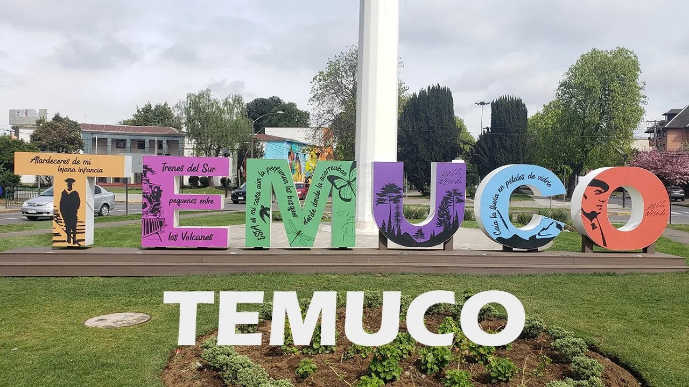
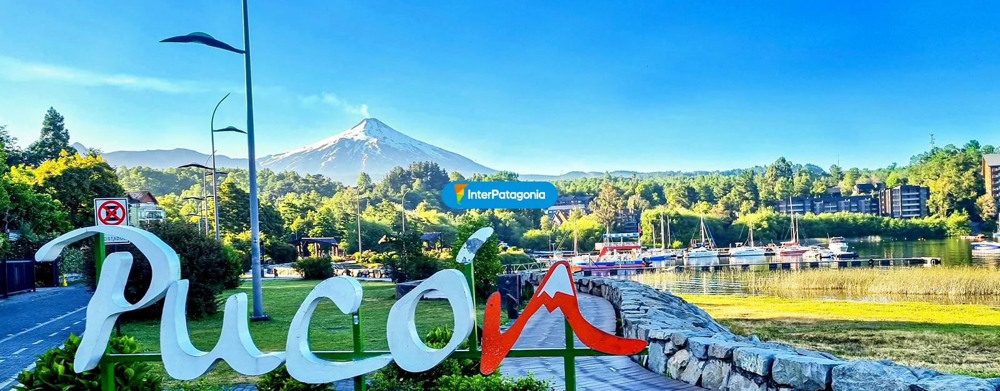
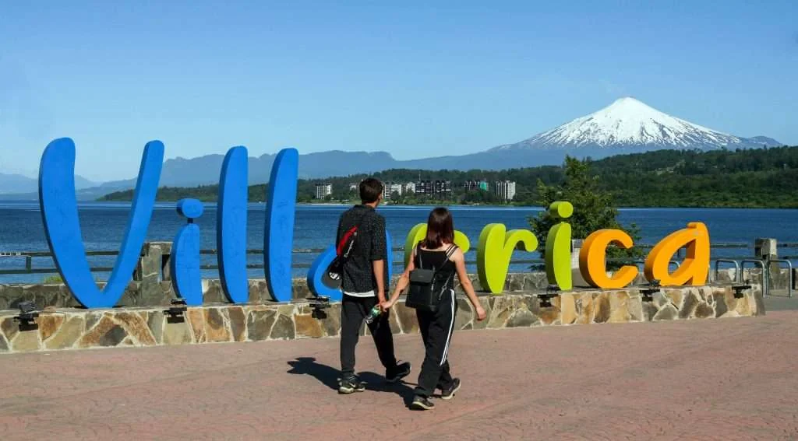

Temuco
Parques, monumentos y senderos urbanos te esperan.
Explorar TemucoTurismo responsable en La Araucanía
Descubre las mejores rutas ecológicas y turísticas de nuestra región.

Parques, monumentos y senderos urbanos te esperan.
Explorar Temuco
Aventura, volcanes y naturaleza salvaje.
Explorar Pucón
Tranquilidad lacustre y hermosos paisajes naturales.
Explorar Villarrica